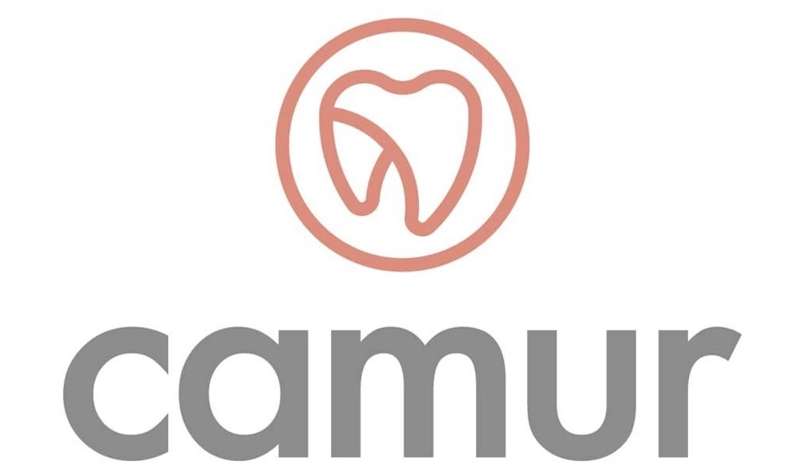

Solución fija y estable
Priorizamos tratamientos pensados para devolver soporte, función y comodidad en el tiempo.

Clínica SANNA - Sanchez Ferrer, Trujillo, PerúEn CAMUR trabajamos casos de implantes con enfoque clínico, evaluación previa y atención privada programada.
Primer paso: una preevaluación breve por WhatsApp antes de agendar atención clínica.
Este canal está diseñado para pacientes que buscan implantes dentales o rehabilitación oral integral en un entorno clínico privado.
Orientado a soluciones fijas y de largo plazo, con planificación diagnóstica.
No está orientado a urgencias, limpiezas, curaciones, extracciones simples ni odontología general de bajo costo.
Priorizamos tratamientos pensados para devolver soporte, función y comodidad en el tiempo.
Cada caso requiere diagnóstico previo para definir si el implante es indicado y en qué secuencia.
Trabajamos por agenda para asegurar tiempos clínicos adecuados y seguimiento ordenado.
No en todos los casos. Primero se revisa historial, condición oral y estudios necesarios para determinar viabilidad.
Con frecuencia sí, porque permite planificar con precisión. Se indica según la evaluación de cada paciente.
No de forma exacta. WhatsApp se usa para una preevaluación inicial; el plan y presupuesto se definen con diagnóstico clínico.
Este canal está enfocado en implantes y rehabilitación oral. Para otros servicios se recomienda una consulta odontológica general.
Si está evaluando una solución fija con implantes, puede iniciar ahora una preevaluación breve por WhatsApp.